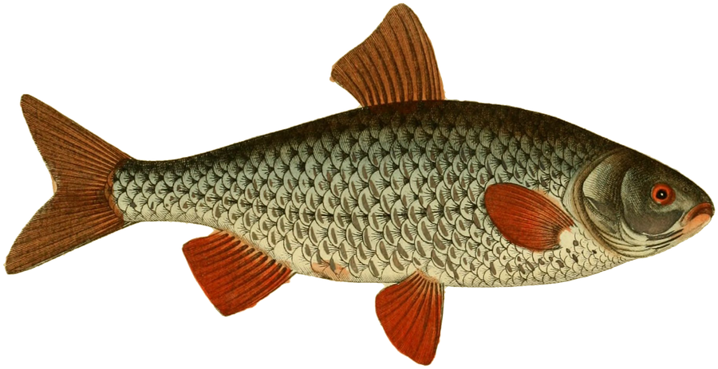

B Coin B2,4 km · La Marne 3 espèces relevées GardonCommunBrochetPeu communSandreRare Choisir Coin B
D Coin DDistance à découvrir · La Marne Espèces à découvrirLa liste se remplit sur place. Choisir Coin D
A Coin ADistance à découvrir · La Marne Espèces à découvrirLa liste se remplit sur place. Choisir Coin A

 BrochetPeu communSandreRareBrochetPeu communSandreRare
BrochetPeu communSandreRareBrochetPeu communSandreRare